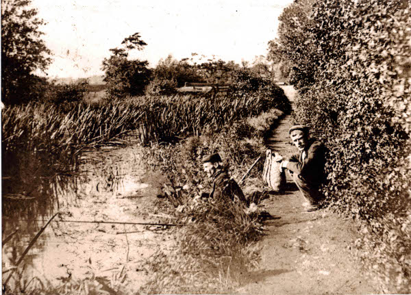

Home
About the Friends
History of the site
Wildlife at Straws Bridge
Latest
Wildlife Sightings
News and Events
Activity Pages
Gallery
Can You Help?
Directions
Next Meeting Date
Links to other websites
WHY IS IT CALLED STRAW'S BRIDGE?

Straw's Bridge was a bridge over the Nutbrook Canal (opened 1794) on the road from West Hallam to Ilkeston (now the A609). It was originally known as Moor's Bridge. After the opening of the canal an overseer's house was built next to the canal on the right hand side of the road (heading for Ilkeston). In 1844 a man called Samuel Straw was employed as overseer and he moved into the house. He was paid 18 shillings per week and the house was rent-free. From that time the bridge came to be called Straw's Bridge.
 Nutbrook Canal 1913
Nutbrook Canal 1913
The original canal bridge was demolished in the 1930's and replaced with a new level bridge over the abandoned canal.The old bridge was deemed dangerous for the increasing traffic, including buses. On the opposite side of the road to the house was a limehouse. This was presumably for storage as there were lime kilns next to the canal just north of Straw's Bridge. Both the overseer's house and the limehouse were demolished.
Just below Straw's Bridge and the overseer's house there was a 'sidecut' known as Hunloke's Arm, named after Sir Henry Hunloke, one of the original founders of the canal. He owned land and mines in West Hallam and this short section of canal was for transporting his coal. Hunloke's arm was filled in but you can see the line across the fields towards Thacker Barn.

This photograph shows part of the excavations at Straw's Bridge in the 1980's, when it was an opencast site.

Please Like Our Facebook Page To Keep Up To Date With Events, News And Developments
Take a look at our events page for more information